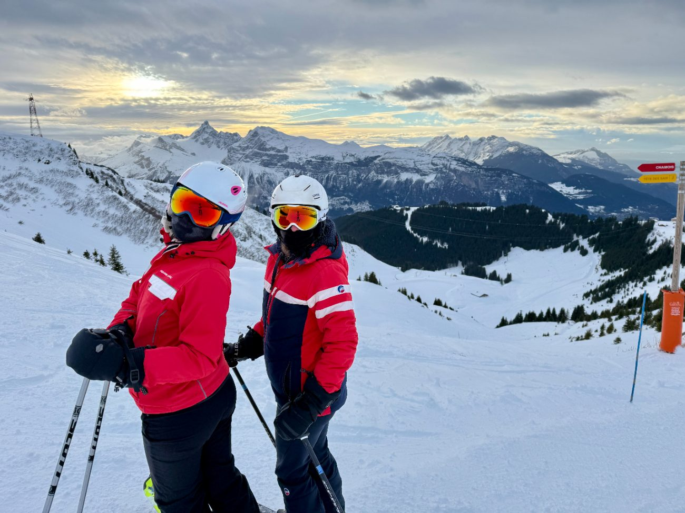

Family skiing in Les Carroz: snow garden and Kid'O'Ski

By September, the February weeks are already going. If you're heading to the mountains with children this winter, one question outranks all the others: where will they learn, and who looks after them while you take a few proper runs? In Les Carroz the answer is unusually well organised — and it's one reason so many families come back to the Lodge.
A Famille Plus resort
Les Carroz d'Arâches is a human-scale resort village that holds the Famille Plus label, the French mark rewarding the quality of a resort's welcome and services for families. In practice that means a crèche, La Souris Verte, for children from 6 months to 3 years; a children's club, Les Loupiots, for ages 3 to 12; and a fully pedestrian Place de l'Ambiance in the village centre, where the week's welcome drinks, concerts and shows take place.
Where children actually learn to ski
The resort has put real thought into its beginner terrain, and it's better spread out than you might expect:
- The snow garden, from age 3, at the foot of the cable car: sunny, with two covered carpet lifts, playful modules and a heated indoor space.
- The Figaro zone, between the cable car and the village: a completely free beginner area, open all day, with a covered carpet and the green Figaro run of the same name. Ideal for first turns without booking anything.
- At the top of the Kédeuze gondola, a green run for young skiers with a covered carpet and a gentle ski lift, facing the Aravis range. Bonus: non-skiing parents can ride up as foot passengers and watch.
- The blue "Plein Soleil" run, the instructors' favourite progression terrain — and, as the name suggests, a place where nobody gets cold.
Ski lessons: ESF, ESI and the Kid'O'Ski package
The ESF ski school in Les Carroz, at 569 route de la télécabine, runs the Club Piou Piou for 3-4 year-olds (from €270 for six sessions), private lessons from age 3 starting at €67, then Flocon and Étoiles group lessons for ages 5 to 12, and snowboarding from age 8. The ESI school completes the offer.
The resort's smartest idea is the Kid'O'Ski package: your child takes their ski lesson in the morning or the afternoon with the school of your choice, and the rest of the day is supervised by the Loupiots club — sledging, ice skating, a snowshoe outing, snow games. The transfer between lesson and club is handled by the club's staff; parents simply drop spare clothes at the Loupiots meeting point, to the left of the ticket offices. That frees up a genuine day's skiing for the adults, guilt-free.
Play zones built into the ski area
Family skiing isn't only about learning. Head for the Cool Zone at the Oasis, with its white palm trees, first small jumps and a family-level (blue) boardercross, deckchairs at the finish. Stronger skiers then move on to the Gron boardercross (red level): 4 starts, 8 banked turns and a descent lasting over a minute. And on the Tête des Saix chairlift, an automated camera captures your ride up — collect your chairlift selfie at the top.
Off the slopes, the resort offers sledging on rails, dog-sledding, group sledging and an ice rink. Enough to fill a bad-weather afternoon without a single sigh.
Booking now for February 2027
French winter holidays in 2027 run over five weeks: zone C from 6 to 22 February, zone A from 13 February to 1 March, zone B from 20 February to 8 March. Two ways to lighten the bill: day passes are free for children under 8 (at sales outlets, on proof of age), and the Grand Massif Early Booking offer gives up to 20% off stays of six days or more booked online. Our article on the 2026-2027 Grand Massif pass prices and opening dates covers the rest.
As for the accommodation, the Lodge was designed for exactly this kind of stay: 83 m², three bedrooms, six beds, a heated ski locker on the ground floor with a boot dryer, a private covered parking space, and the Carroz cable car a three-minute walk away. In the morning you leave with dry boots and nothing to load into the car.
Fancy a stay at the Lodge?
4★ apartment for 6, south-facing terrace and Nordic bath, in the centre of Les Carroz d'Arâches.
Check availability